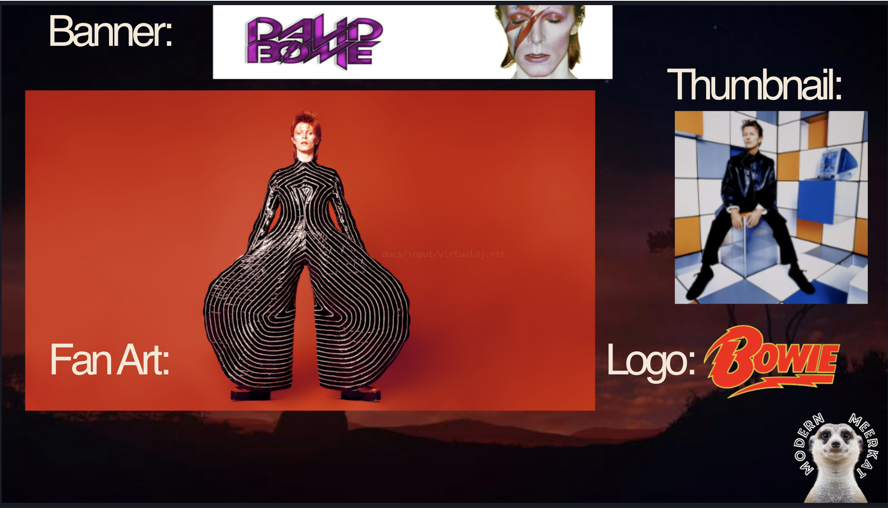

General Info About Artist Extras¶
IMPORTANT: Many settings in this section currently require a restart of the software in order to take effect.
Need some extra content for audio-only DJing? The artist extras plug-ins allow for near real-time downloads of banners, logos, thumbnails, and fan art based upon the artists of the track that is currently playing.
Artwork Details¶
{kind=link}
Type |
WebSocket URL |
Raw Image URL |
WS Height |
WS Width |
General Quality |
Description |
|---|---|---|---|---|---|---|
Banners |
/artistbanner.htm |
/artistbanner.png |
200px |
No Max |
High |
Image usually with picture and name of artist. |
Fan Art |
/artistfanart.htm |
800px |
1280px |
Varies |
Most sites curate these to be of higher quality but low quality images do get in |
|
Logos |
/artistlogo.htm |
/artistlogo.png |
200px |
480px |
High |
Stylized text or image that represents the artist |
Thumbnails |
/artistthumb.htm |
/artistthumb.png |
480px |
200px |
Varies |
Image of the artist |
Notes:
Raw image URLs are not scaled and represent the original format as downloaded.
Enabling this feature may cause a slowdown during the Exit of the app in order to save work in progress.
Tracks with multiple artists will download both sets of images. However, only one will be used for fanart, banners, and logos.
Biographies¶
Additionally, a biography of the artist may also be available. These biographies are also written by fans and may be brief or fairly detailed. The ‘artistlongbio’ value has the full content whereas the ‘artistshortbio’ has only the content that will fit in a single Twitch chat message.
NOTE: The short bio will end in a complete sentence as determined by a natural language toolkit. One should be aware, however, that punctuation marks may occasionally trip it up so the last sentence may get truncated early.
Timing¶
Most of the content is downloaded during the write delay time period as set in the general settings . You may need to bump up the delay to give enough time to not have ‘empty’ graphics. In general:
Every time an artist is loaded as a track, the system will try to download any new art that was either skipped or missed. So all limits that are set are for that track’s downloads. All previously downloaded content will is saved locally for long periods of time. (They will eventually be removed.)
Banners, Logos, and Thumbnails are determined once per track from whatever content has been downloaded just prior to announcement.
Fanart will start to download next and will rotate during the entire time that artist is being played.
Switching to a different track from the same artist pick new banners, logos, and thumbnails if they are available.
Collaborations will attempt (but it is not guaranteed!) to pull extras for both artists if the metadata of the track has more than one set of artists listed. For example, a track labeled with both David Bowie and Lou Reed should have both Bowie and Reed’s images.
At startup and every hour while running, the image cache will be verified so that image lookups remain fast. This operation is completely local and will cause no extra network traffic.
Generic Settings¶
Configuring this feature is more involved than many others due to the need to compensate for various hardware limitations such as CPU and network bandwidth vs the amount of time it takes for the content to be available. The default settings are thought to be fairly conservative and work with most configurations that have relatively good Internet connectivity with a Write Delay of 5 seconds.
Maximums: the number of images to attempt to download at a given time out of the total set available. Banners, logos, and thumbnails are downloaded first, and then fan art will be downloaded. Any extra fan art will be downloaded. The maximums should be low enough that the first set downloads prior to the track being announced and the fanart finishes downloading prior to the next track being selected.
Download processes: The number of background processes to run that do nothing but download art and update the backend storage. This number should be configured high enough to get all of the first pass of downloads done quickly but low enough that it doesn’t overwhelm
Image cache size in GB: The amount of space to use for images. In general, every 1GB will store approximately 1,000 mixed size images.
The ‘Clear Cache’ button will remove all mappings between artists and images. It does not remove the cached responses from the web server in order to save bandwidth.
Reminder¶
In order to perform these look ups, certain data is required to be tagged in the media to make the results remotely accurate. More data == more better results. Therefore, media with ISRC tags will cause MusicBrainz lookups if that service is enabled to fill in any missing data.